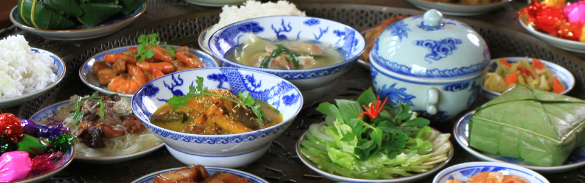

00
:
00
:
00
--
ベトナム飲食
美味しいベトナム料理

Loading...


バインミーの種類
バインミーソッヴァン
バインミーソッヴァンはベトナム人に大人気の料理です。パンは香り高く焼き上げられます ソッヴァンは牛すじとスパイスで作られています。パンとソッヴァンを付けて、口に乗せてからとても美味しい食品を感じます。
バインミーソッヴァンはベトナム人に大人気の料理です。パンは香り高く焼き上げられます ソッヴァンは牛すじとスパイスで作られています。パンとソッヴァンを付けて、口に乗せてからとても美味しい食品を感じます。
バインミー卵
卵パンは目玉焼きから作られています。焼いたパンにきゅうりとコリアンダーとにんじんと焼いた卵を入れて、すぐに食べます。
この食品もベトナム人にとって超便利で時間制約の食品です。
卵パンは目玉焼きから作られています。焼いたパンにきゅうりとコリアンダーとにんじんと焼いた卵を入れて、すぐに食べます。
この食品もベトナム人にとって超便利で時間制約の食品です。
バインミーパテ
バインミーパテはとても身近な朝食料理で、多くのベトナム人にもとても人気があります。 それは、脂っこいパテおよびその他のリッチ成分を配合したバインミーのカリカリクランチ、と高速なだけでなく、非常においしい便利なだけではない一品です。
バインミーパテはとても身近な朝食料理で、多くのベトナム人にもとても人気があります。 それは、脂っこいパテおよびその他のリッチ成分を配合したバインミーのカリカリクランチ、と高速なだけでなく、非常においしい便利なだけではない一品です。